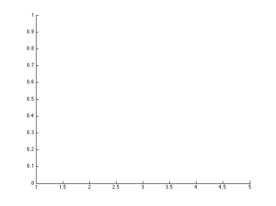

clear all; close all;
rand('state', 1);
nx = 8;
ny = 4;
richness = 3;
initialTop = [nx, ny];
fixedNodes = [1, ny*(nx - 1) + 1];
fDes = zeros(1, 2*nx*ny);
for i = 2:(nx-1)
fidx = ny*(i-1) + 1;
fDes(2*fidx) = -1;
end
fID = 1:1:nx*ny;
X = [];
XID = [];
for i = 1:1:nx
for j = 1:1:ny
X = [X [i-1; j-1]];
XID = [XID (j + (i-1)*ny)];
end
end
[EVecs, L, E, EID] = buildEdges(X, XID, richness);
ytot = zeros(2*nx*ny - 4, 1);
cs_obj = [];
loc_obj = [];
maxiters = 5;
for iter = 1:maxiters
iter
A = buildProjection(E, EVecs, XID, fixedNodes);
F = buildForceVector(fDes, fixedNodes, fID);
[n,m] = size(A);
M = eye(m);
d = ones(m,1) + 1;
V = sum(d)/10;
[a, optval] = optimizeAreas(A, L, M, d, V, F);
cs_obj = [cs_obj, optval];
[y, optval] = optimizeLocations(A, L, F, a, ytot);
loc_obj = [loc_obj, optval];
ytot = ytot + y;
notFixed = setdiff(XID, fixedNodes);
for i = 1:1:length(notFixed);
id = notFixed(i);
X(1, id) = X(1, id) + y(2*i - 1);
X(2, id) = X(2, id) + y(2*i);
end
[EVecs, L] = updateEdges(E, X, XID);
end
figure();
hold on;
plot(1:1:maxiters, cs_obj);
plot(1:1:maxiters, loc_obj);
iter =
1
Warning: Duplicate directory name: /Users/Icarus/Documents/MATLAB/cvx/scs.
Calling scs: 2208 variables, 159 equality constraints
For improved efficiency, scs is solving the dual problem.
------------------------------------------------------------
----------------------------------------------------------------------------
scs v1.0 - Splitting Conic Solver
(c) Brendan O'Donoghue, Stanford University, 2012
----------------------------------------------------------------------------
Lin-sys: sparse-direct, nnz in A = 1641
EPS = 1.00e-03, ALPHA = 1.80, MAX_ITERS = 2500, NORMALIZE = 1, SCALE = 5.00
Variables n = 159, constraints m = 4038
Cones: linear vars: 317
sd vars: 3721, sd blks: 1
----------------------------------------------------------------------------
Iter | pri res | dua res | rel gap | pri obj | dua obj | kap/tau | time (s)
============================================================================
0| 7.30e+02 1.60e+01 nan -inf inf inf 1.70e-03
100| 3.05e-01 1.95e+00 1.17e-02 2.67e+01 2.73e+01 0.00e+00 1.04e-01
200| 2.76e-01 1.73e+00 6.39e-03 3.36e+01 3.40e+01 0.00e+00 1.58e-01
300| 3.40e-02 1.25e+00 6.68e-03 4.00e+01 4.05e+01 0.00e+00 2.25e-01
400| 1.65e-01 8.49e-01 5.64e-03 4.78e+01 4.84e+01 1.69e-15 2.91e-01
500| 2.10e-01 3.41e-01 4.01e-03 5.48e+01 5.53e+01 0.00e+00 3.56e-01
600| 1.24e-01 4.40e-01 2.73e-03 5.85e+01 5.88e+01 0.00e+00 4.14e-01
700| 3.63e-02 3.38e-01 1.75e-03 6.04e+01 6.06e+01 0.00e+00 4.71e-01
800| 1.99e-02 2.93e-01 1.56e-03 6.23e+01 6.25e+01 0.00e+00 5.34e-01
900| 2.93e-02 1.87e-01 1.37e-03 6.46e+01 6.48e+01 0.00e+00 6.05e-01
1000| 2.21e-02 1.95e-01 9.63e-04 6.64e+01 6.65e+01 0.00e+00 6.73e-01
1100| 1.92e-02 2.47e-01 7.38e-04 6.75e+01 6.76e+01 1.69e-15 7.38e-01
1200| 1.46e-02 1.84e-01 6.85e-04 6.86e+01 6.87e+01 1.76e-15 8.14e-01
1300| 7.21e-03 1.35e-01 5.79e-04 6.97e+01 6.98e+01 1.84e-15 8.94e-01
1400| 2.71e-02 9.00e-02 6.23e-04 7.08e+01 7.09e+01 1.91e-15 9.71e-01
1500| 2.09e-02 1.11e-01 5.39e-04 7.17e+01 7.17e+01 1.97e-15 1.04e+00
1600| 1.02e-02 1.22e-01 4.71e-04 7.24e+01 7.25e+01 2.03e-15 1.11e+00
1700| 3.50e-02 6.03e-02 3.91e-04 7.30e+01 7.31e+01 0.00e+00 1.20e+00
1800| 2.45e-02 8.50e-02 2.56e-04 7.35e+01 7.35e+01 0.00e+00 1.28e+00
1900| 3.35e-03 1.14e-01 2.17e-04 7.39e+01 7.39e+01 0.00e+00 1.36e+00
2000| 1.18e-02 9.73e-02 2.67e-04 7.44e+01 7.45e+01 0.00e+00 1.43e+00
2100| 4.54e-03 4.47e-02 2.52e-04 7.49e+01 7.49e+01 0.00e+00 1.50e+00
2200| 1.17e-02 6.86e-02 2.12e-04 7.53e+01 7.53e+01 0.00e+00 1.57e+00
2300| 5.34e-03 9.66e-02 1.92e-04 7.56e+01 7.56e+01 0.00e+00 1.63e+00
2400| 6.11e-03 4.92e-02 1.71e-04 7.59e+01 7.59e+01 0.00e+00 1.71e+00
2500| 1.59e-02 3.78e-02 1.32e-04 7.61e+01 7.61e+01 0.00e+00 1.78e+00
----------------------------------------------------------------------------
Status: Solved/Inaccurate
Hit MAX_ITERS, solution may be inaccurate
Timing: Solve time: 1.78e+00s, setup time: 1.10e-03s
Lin-sys: nnz in L factor: 7696, avg solve time: 4.15e-05s
Cones: avg projection time: 6.01e-04s
----------------------------------------------------------------------------
Error metrics:
|Ax + s - b|_2 / (1 + |b|_2) = 1.8101e-02
|A'y + c|_2 / (1 + |c|_2) = 4.5902e-02
|c'x + b'y| / (1 + |c'x| + |b'y|) = 1.2137e-04
dist(s, K) = 0, dist(y, K*) = 0, s'y = 0
----------------------------------------------------------------------------
c'x = 76.1066, -b'y = 76.1252
============================================================================
------------------------------------------------------------
Status: Solved/Inaccurate
Optimal value (cvx_optval): NaN
Calling scs: 2253 variables, 177 equality constraints
For improved efficiency, scs is solving the dual problem.
------------------------------------------------------------
----------------------------------------------------------------------------
scs v1.0 - Splitting Conic Solver
(c) Brendan O'Donoghue, Stanford University, 2012
----------------------------------------------------------------------------
Lin-sys: sparse-direct, nnz in A = 3715
EPS = 1.00e-03, ALPHA = 1.80, MAX_ITERS = 2500, NORMALIZE = 1, SCALE = 5.00
Variables n = 177, constraints m = 4083
Cones: linear vars: 362
sd vars: 3721, sd blks: 1
----------------------------------------------------------------------------
Iter | pri res | dua res | rel gap | pri obj | dua obj | kap/tau | time (s)
============================================================================
0| 1.66e+02 3.29e+00 nan -inf inf inf 1.69e-03
100| 2.88e-01 7.84e-01 5.68e-02 2.35e+01 2.64e+01 3.02e-15 9.18e-02
200| 2.81e-01 1.65e+00 1.04e-01 2.83e+01 3.49e+01 0.00e+00 1.70e-01
300| 2.12e-01 2.30e+00 6.08e-02 3.80e+01 4.30e+01 0.00e+00 2.46e-01
400| 8.77e-02 6.55e-01 6.44e-03 4.69e+01 4.63e+01 0.00e+00 3.34e-01
500| 1.09e-01 3.71e-01 2.36e-03 5.00e+01 4.97e+01 0.00e+00 4.09e-01
600| 9.04e-02 2.17e-01 7.46e-03 5.16e+01 5.24e+01 0.00e+00 4.79e-01
700| 7.21e-02 1.91e-01 2.94e-03 5.39e+01 5.43e+01 0.00e+00 5.47e-01
800| 5.23e-02 2.10e-01 1.75e-03 5.57e+01 5.59e+01 0.00e+00 6.12e-01
900| 4.91e-02 1.85e-01 1.29e-03 5.71e+01 5.72e+01 0.00e+00 6.88e-01
1000| 3.89e-02 1.73e-01 1.80e-03 5.83e+01 5.85e+01 0.00e+00 7.62e-01
1100| 3.65e-02 1.18e-01 1.13e-04 5.94e+01 5.94e+01 0.00e+00 8.29e-01
1200| 3.90e-02 1.11e-01 1.25e-03 6.02e+01 6.04e+01 0.00e+00 9.01e-01
1300| 3.53e-02 8.08e-02 5.32e-04 6.10e+01 6.11e+01 0.00e+00 9.71e-01
1400| 3.73e-02 5.65e-02 1.35e-03 6.17e+01 6.19e+01 0.00e+00 1.04e+00
1500| 3.44e-02 3.46e-02 3.12e-04 6.24e+01 6.24e+01 0.00e+00 1.11e+00
1600| 3.58e-02 4.14e-02 1.52e-03 6.28e+01 6.30e+01 0.00e+00 1.18e+00
1700| 3.33e-02 2.87e-02 1.21e-04 6.35e+01 6.35e+01 0.00e+00 1.25e+00
1800| 3.43e-02 2.93e-02 7.53e-04 6.39e+01 6.40e+01 0.00e+00 1.31e+00
1900| 3.36e-02 1.85e-02 3.48e-04 6.44e+01 6.44e+01 0.00e+00 1.38e+00
2000| 3.40e-02 1.47e-02 3.77e-04 6.48e+01 6.48e+01 0.00e+00 1.45e+00
2100| 3.29e-02 1.94e-02 4.09e-04 6.51e+01 6.52e+01 0.00e+00 1.52e+00
2200| 3.32e-02 2.06e-02 2.81e-04 6.55e+01 6.56e+01 0.00e+00 1.59e+00
2300| 3.28e-02 1.30e-02 3.52e-04 6.58e+01 6.59e+01 0.00e+00 1.65e+00
2400| 3.28e-02 1.01e-02 2.99e-04 6.62e+01 6.62e+01 0.00e+00 1.72e+00
2500| 3.27e-02 1.46e-02 1.15e-04 6.64e+01 6.65e+01 0.00e+00 1.79e+00
----------------------------------------------------------------------------
Status: Solved/Inaccurate
Hit MAX_ITERS, solution may be inaccurate
Timing: Solve time: 1.79e+00s, setup time: 1.36e-03s
Lin-sys: nnz in L factor: 9634, avg solve time: 4.73e-05s
Cones: avg projection time: 6.20e-04s
----------------------------------------------------------------------------
Error metrics:
|Ax + s - b|_2 / (1 + |b|_2) = 3.2754e-02
|A'y + c|_2 / (1 + |c|_2) = 1.2291e-02
|c'x + b'y| / (1 + |c'x| + |b'y|) = 1.6658e-04
dist(s, K) = 0, dist(y, K*) = 0, s'y = 0
----------------------------------------------------------------------------
c'x = 66.5008, -b'y = 66.5231
============================================================================
------------------------------------------------------------
Status: Solved/Inaccurate
Optimal value (cvx_optval): NaN
iter =
2
Calling scs: 2208 variables, 159 equality constraints
For improved efficiency, scs is solving the dual problem.
------------------------------------------------------------
----------------------------------------------------------------------------
scs v1.0 - Splitting Conic Solver
(c) Brendan O'Donoghue, Stanford University, 2012
----------------------------------------------------------------------------
Lin-sys: sparse-direct, nnz in A = 1985
EPS = 1.00e-03, ALPHA = 1.80, MAX_ITERS = 2500, NORMALIZE = 1, SCALE = 5.00
Variables n = 159, constraints m = 4038
Cones: linear vars: 317
sd vars: 3721, sd blks: 1
----------------------------------------------------------------------------
Iter | pri res | dua res | rel gap | pri obj | dua obj | kap/tau | time (s)
============================================================================
0| 6.45e+02 1.87e+01 nan -inf inf inf 2.34e-03
100| 1.86e-01 3.24e+00 1.05e-02 2.59e+01 2.65e+01 1.32e-15 4.82e-02
200| 5.60e-02 4.09e+00 1.22e-02 3.26e+01 3.34e+01 1.96e-15 1.04e-01
300| 1.62e-01 4.28e+00 8.87e-03 3.99e+01 4.07e+01 0.00e+00 1.60e-01
400| 1.50e-01 2.68e+00 7.19e-03 4.80e+01 4.87e+01 0.00e+00 2.13e-01
500| 3.75e-02 1.51e+00 4.70e-03 5.50e+01 5.55e+01 0.00e+00 2.61e-01
600| 1.13e-01 2.50e+00 2.14e-03 5.80e+01 5.82e+01 0.00e+00 3.10e-01
700| 1.06e-01 1.42e+00 9.85e-04 5.87e+01 5.88e+01 0.00e+00 3.76e-01
800| 1.81e-02 1.03e+00 1.86e-03 6.08e+01 6.10e+01 0.00e+00 4.45e-01
900| 2.75e-02 4.47e-01 1.48e-03 6.36e+01 6.38e+01 0.00e+00 5.10e-01
1000| 1.04e-02 6.84e-01 1.13e-03 6.49e+01 6.51e+01 0.00e+00 5.83e-01
1100| 9.57e-03 5.99e-01 9.21e-04 6.61e+01 6.62e+01 0.00e+00 6.52e-01
1200| 3.50e-03 5.20e-01 7.41e-04 6.74e+01 6.75e+01 1.92e-15 7.21e-01
1300| 1.98e-02 3.06e-01 8.14e-04 6.86e+01 6.87e+01 2.01e-15 7.89e-01
1400| 2.94e-02 4.01e-01 3.27e-04 6.91e+01 6.91e+01 0.00e+00 8.56e-01
1500| 2.19e-02 1.70e-01 4.20e-04 6.98e+01 6.99e+01 2.12e-15 9.20e-01
1600| 1.56e-02 1.16e-01 5.43e-04 7.07e+01 7.08e+01 2.18e-15 9.79e-01
1700| 2.69e-02 3.91e-01 3.31e-04 7.12e+01 7.13e+01 2.23e-15 1.04e+00
1800| 2.25e-02 2.53e-01 1.85e-04 7.15e+01 7.15e+01 0.00e+00 1.10e+00
1900| 1.93e-02 1.86e-01 2.48e-04 7.20e+01 7.20e+01 0.00e+00 1.16e+00
2000| 1.66e-02 1.07e-01 2.81e-04 7.25e+01 7.25e+01 0.00e+00 1.23e+00
2100| 4.08e-03 3.23e-01 1.70e-04 7.28e+01 7.28e+01 0.00e+00 1.29e+00
2200| 2.75e-03 2.21e-01 1.22e-04 7.30e+01 7.30e+01 0.00e+00 1.35e+00
2300| 1.09e-02 9.45e-02 1.87e-04 7.33e+01 7.33e+01 0.00e+00 1.42e+00
2400| 1.86e-02 1.97e-01 1.31e-04 7.35e+01 7.35e+01 0.00e+00 1.49e+00
2500| 9.44e-04 2.40e-01 6.42e-05 7.35e+01 7.35e+01 0.00e+00 1.54e+00
----------------------------------------------------------------------------
Status: Solved/Inaccurate
Hit MAX_ITERS, solution may be inaccurate
Timing: Solve time: 1.54e+00s, setup time: 1.97e-03s
Lin-sys: nnz in L factor: 8131, avg solve time: 3.99e-05s
Cones: avg projection time: 5.31e-04s
----------------------------------------------------------------------------
Error metrics:
|Ax + s - b|_2 / (1 + |b|_2) = 6.4201e-03
|A'y + c|_2 / (1 + |c|_2) = 2.5309e-01
|c'x + b'y| / (1 + |c'x| + |b'y|) = 6.8977e-05
dist(s, K) = 0, dist(y, K*) = 0, s'y = 0
----------------------------------------------------------------------------
c'x = 73.5495, -b'y = 73.5597
============================================================================
------------------------------------------------------------
Status: Solved/Inaccurate
Optimal value (cvx_optval): NaN
Calling scs: 2253 variables, 177 equality constraints
For improved efficiency, scs is solving the dual problem.
------------------------------------------------------------
----------------------------------------------------------------------------
scs v1.0 - Splitting Conic Solver
(c) Brendan O'Donoghue, Stanford University, 2012
----------------------------------------------------------------------------
Lin-sys: sparse-direct, nnz in A = 4775
EPS = 1.00e-03, ALPHA = 1.80, MAX_ITERS = 2500, NORMALIZE = 1, SCALE = 5.00
Variables n = 177, constraints m = 4083
Cones: linear vars: 362
sd vars: 3721, sd blks: 1
----------------------------------------------------------------------------
Iter | pri res | dua res | rel gap | pri obj | dua obj | kap/tau | time (s)
============================================================================
0| 1.65e+02 3.24e+00 nan -inf inf inf 2.74e-03
100| 3.66e-01 7.07e-01 4.27e-02 2.40e+01 2.61e+01 1.48e-15 8.44e-02
200| 2.32e-01 1.64e+00 1.12e-01 2.73e+01 3.42e+01 2.03e-15 1.52e-01
300| 2.38e-01 1.83e+00 7.61e-02 3.58e+01 4.18e+01 0.00e+00 2.19e-01
400| 1.51e-01 7.39e-01 3.83e-04 4.63e+01 4.63e+01 0.00e+00 2.96e-01
500| 1.10e-01 5.70e-01 6.89e-03 4.98e+01 4.91e+01 0.00e+00 3.71e-01
600| 5.55e-02 5.86e-01 1.54e-02 5.09e+01 5.25e+01 0.00e+00 4.42e-01
700| 4.88e-02 3.73e-01 7.20e-03 5.43e+01 5.35e+01 0.00e+00 5.01e-01
800| 4.87e-02 2.76e-01 8.18e-03 5.49e+01 5.58e+01 0.00e+00 5.63e-01
900| 4.12e-02 2.20e-01 3.88e-03 5.71e+01 5.67e+01 0.00e+00 6.29e-01
1000| 3.65e-02 1.81e-01 4.69e-03 5.77e+01 5.82e+01 0.00e+00 7.00e-01
1100| 4.53e-02 1.34e-01 8.41e-04 5.91e+01 5.90e+01 0.00e+00 7.62e-01
1200| 3.92e-02 1.11e-01 2.04e-03 5.97e+01 6.00e+01 0.00e+00 8.24e-01
1300| 4.01e-02 6.79e-02 8.44e-04 6.06e+01 6.07e+01 0.00e+00 8.80e-01
1400| 3.88e-02 4.16e-02 3.89e-04 6.13e+01 6.14e+01 0.00e+00 9.38e-01
1500| 3.53e-02 6.55e-02 1.74e-03 6.19e+01 6.21e+01 0.00e+00 9.96e-01
1600| 3.43e-02 5.93e-02 9.27e-04 6.26e+01 6.25e+01 0.00e+00 1.05e+00
1700| 3.23e-02 7.32e-02 2.23e-03 6.29e+01 6.32e+01 0.00e+00 1.12e+00
1800| 3.18e-02 5.39e-02 1.04e-03 6.36e+01 6.35e+01 0.00e+00 1.18e+00
1900| 3.21e-02 5.10e-02 1.50e-03 6.39e+01 6.40e+01 0.00e+00 1.24e+00
2000| 3.14e-02 3.18e-02 1.72e-05 6.44e+01 6.44e+01 0.00e+00 1.29e+00
2100| 3.25e-02 2.25e-02 2.55e-04 6.47e+01 6.48e+01 0.00e+00 1.35e+00
2200| 3.03e-02 2.89e-02 7.90e-04 6.51e+01 6.52e+01 0.00e+00 1.42e+00
2300| 3.11e-02 3.44e-02 2.01e-04 6.55e+01 6.54e+01 0.00e+00 1.48e+00
2400| 2.95e-02 4.52e-02 8.76e-04 6.57e+01 6.58e+01 0.00e+00 1.53e+00
2500| 2.98e-02 3.09e-02 3.63e-05 6.60e+01 6.60e+01 0.00e+00 1.59e+00
----------------------------------------------------------------------------
Status: Solved/Inaccurate
Hit MAX_ITERS, solution may be inaccurate
Timing: Solve time: 1.59e+00s, setup time: 3.53e-03s
Lin-sys: nnz in L factor: 10394, avg solve time: 5.06e-05s
Cones: avg projection time: 5.36e-04s
----------------------------------------------------------------------------
Error metrics:
|Ax + s - b|_2 / (1 + |b|_2) = 2.9541e-02
|A'y + c|_2 / (1 + |c|_2) = 3.7062e-02
|c'x + b'y| / (1 + |c'x| + |b'y|) = 1.3495e-04
dist(s, K) = 0, dist(y, K*) = 0, s'y = 0
----------------------------------------------------------------------------
c'x = 66.0929, -b'y = 66.0749
============================================================================
------------------------------------------------------------
Status: Solved/Inaccurate
Optimal value (cvx_optval): NaN
iter =
3
Calling scs: 2208 variables, 159 equality constraints
For improved efficiency, scs is solving the dual problem.
------------------------------------------------------------
----------------------------------------------------------------------------
scs v1.0 - Splitting Conic Solver
(c) Brendan O'Donoghue, Stanford University, 2012
----------------------------------------------------------------------------
Lin-sys: sparse-direct, nnz in A = 1985
EPS = 1.00e-03, ALPHA = 1.80, MAX_ITERS = 2500, NORMALIZE = 1, SCALE = 5.00
Variables n = 159, constraints m = 4038
Cones: linear vars: 317
sd vars: 3721, sd blks: 1
----------------------------------------------------------------------------
Iter | pri res | dua res | rel gap | pri obj | dua obj | kap/tau | time (s)
============================================================================
0| 5.85e+02 6.20e+01 nan -inf inf inf 2.42e-03
100| 1.26e-01 5.14e+00 2.19e-02 2.52e+01 2.64e+01 0.00e+00 5.17e-02
200| 6.36e-02 9.39e+00 1.44e-02 3.16e+01 3.25e+01 0.00e+00 1.14e-01
300| 9.83e-02 8.79e+00 1.32e-02 3.95e+01 4.06e+01 0.00e+00 1.70e-01
400| 8.02e-02 5.70e+00 7.39e-03 4.68e+01 4.75e+01 0.00e+00 2.27e-01
500| 2.69e-02 4.52e+00 5.07e-03 5.26e+01 5.32e+01 2.28e-15 2.83e-01
600| 7.15e-02 4.27e-01 2.41e-03 5.52e+01 5.55e+01 0.00e+00 3.60e-01
700| 5.84e-02 2.56e+00 1.91e-03 5.64e+01 5.66e+01 0.00e+00 4.37e-01
800| 4.86e-02 1.36e+00 1.07e-03 5.80e+01 5.82e+01 0.00e+00 5.06e-01
900| 9.44e-02 1.65e+00 1.69e-03 6.03e+01 6.06e+01 0.00e+00 5.67e-01
1000| 2.80e-02 1.40e+00 1.36e-03 6.22e+01 6.24e+01 0.00e+00 6.28e-01
1100| 6.15e-02 9.17e-01 8.26e-04 6.36e+01 6.37e+01 0.00e+00 7.01e-01
1200| 1.08e-02 1.02e+00 5.47e-04 6.45e+01 6.45e+01 0.00e+00 7.76e-01
1300| 1.86e-02 1.69e+00 6.42e-04 6.54e+01 6.55e+01 2.02e-15 8.43e-01
1400| 3.49e-02 1.61e+00 7.51e-04 6.66e+01 6.67e+01 2.09e-15 9.02e-01
1500| 1.01e-02 1.15e+00 5.97e-04 6.75e+01 6.75e+01 0.00e+00 9.60e-01
1600| 4.35e-02 5.83e-01 4.96e-04 6.77e+01 6.78e+01 0.00e+00 1.03e+00
1700| 4.25e-03 4.67e-01 2.36e-04 6.80e+01 6.80e+01 0.00e+00 1.10e+00
1800| 3.35e-02 8.37e-01 3.74e-04 6.86e+01 6.86e+01 2.28e-15 1.17e+00
1900| 3.72e-03 5.96e-01 2.81e-04 6.90e+01 6.91e+01 2.32e-15 1.23e+00
2000| 5.90e-03 5.18e-01 7.05e-05 6.93e+01 6.93e+01 2.35e-15 1.29e+00
2100| 1.64e-03 3.89e-01 1.66e-04 6.95e+01 6.95e+01 0.00e+00 1.36e+00
2200| 1.11e-02 5.91e-01 1.95e-04 6.98e+01 6.98e+01 2.39e-15 1.42e+00
2300| 4.78e-03 2.63e-01 8.30e-05 7.00e+01 7.00e+01 0.00e+00 1.47e+00
2400| 1.06e-02 4.14e-01 1.91e-04 7.01e+01 7.02e+01 2.43e-15 1.53e+00
2500| 4.41e-03 4.29e-01 1.42e-04 7.03e+01 7.04e+01 0.00e+00 1.59e+00
----------------------------------------------------------------------------
Status: Solved/Inaccurate
Hit MAX_ITERS, solution may be inaccurate
Timing: Solve time: 1.59e+00s, setup time: 1.96e-03s
Lin-sys: nnz in L factor: 8131, avg solve time: 4.09e-05s
Cones: avg projection time: 5.48e-04s
----------------------------------------------------------------------------
Error metrics:
|Ax + s - b|_2 / (1 + |b|_2) = 7.5169e-03
|A'y + c|_2 / (1 + |c|_2) = 4.6769e-01
|c'x + b'y| / (1 + |c'x| + |b'y|) = 1.1387e-04
dist(s, K) = 0, dist(y, K*) = 0, s'y = 0
----------------------------------------------------------------------------
c'x = 70.3815, -b'y = 70.3976
============================================================================
------------------------------------------------------------
Status: Solved/Inaccurate
Optimal value (cvx_optval): NaN
Calling scs: 2253 variables, 177 equality constraints
For improved efficiency, scs is solving the dual problem.
------------------------------------------------------------
----------------------------------------------------------------------------
scs v1.0 - Splitting Conic Solver
(c) Brendan O'Donoghue, Stanford University, 2012
----------------------------------------------------------------------------
Lin-sys: sparse-direct, nnz in A = 4775
EPS = 1.00e-03, ALPHA = 1.80, MAX_ITERS = 2500, NORMALIZE = 1, SCALE = 5.00
Variables n = 177, constraints m = 4083
Cones: linear vars: 362
sd vars: 3721, sd blks: 1
----------------------------------------------------------------------------
Iter | pri res | dua res | rel gap | pri obj | dua obj | kap/tau | time (s)
============================================================================
0| 1.60e+02 3.60e+00 nan -inf inf inf 2.62e-03
100| 3.81e-01 7.95e-01 4.52e-02 2.51e+01 2.75e+01 0.00e+00 9.08e-02
200| 1.51e-01 1.59e+00 1.14e-01 2.76e+01 3.48e+01 0.00e+00 1.64e-01
300| 1.60e-01 1.26e+00 5.10e-02 3.92e+01 4.35e+01 3.25e-15 2.45e-01
400| 9.36e-02 6.45e-01 7.39e-03 4.61e+01 4.67e+01 0.00e+00 3.23e-01
500| 7.25e-02 4.29e-01 5.50e-04 4.93e+01 4.93e+01 0.00e+00 3.96e-01
600| 5.27e-02 3.03e-01 9.49e-03 5.11e+01 5.20e+01 2.65e-15 4.66e-01
700| 4.84e-02 1.89e-01 2.14e-04 5.36e+01 5.36e+01 0.00e+00 5.33e-01
800| 3.71e-02 1.85e-01 4.03e-03 5.48e+01 5.52e+01 0.00e+00 6.00e-01
900| 4.08e-02 1.60e-01 5.33e-05 5.64e+01 5.64e+01 0.00e+00 6.68e-01
1000| 3.72e-02 1.32e-01 3.58e-03 5.72e+01 5.76e+01 0.00e+00 7.35e-01
1100| 3.59e-02 9.09e-02 7.06e-04 5.85e+01 5.84e+01 0.00e+00 8.00e-01
1200| 3.41e-02 8.57e-02 2.30e-03 5.91e+01 5.93e+01 0.00e+00 8.68e-01
1300| 3.48e-02 5.25e-02 2.88e-04 5.99e+01 6.00e+01 0.00e+00 9.33e-01
1400| 3.36e-02 4.63e-02 8.00e-04 6.05e+01 6.06e+01 0.00e+00 9.96e-01
1500| 3.05e-02 4.46e-02 1.25e-03 6.11e+01 6.12e+01 0.00e+00 1.06e+00
1600| 3.15e-02 2.19e-02 6.25e-05 6.17e+01 6.17e+01 0.00e+00 1.12e+00
1700| 2.89e-02 2.91e-02 1.00e-03 6.20e+01 6.22e+01 0.00e+00 1.19e+00
1800| 2.96e-02 2.31e-02 7.66e-05 6.25e+01 6.25e+01 0.00e+00 1.26e+00
1900| 2.78e-02 3.50e-02 1.09e-03 6.28e+01 6.30e+01 0.00e+00 1.33e+00
2000| 2.77e-02 2.84e-02 3.24e-04 6.33e+01 6.32e+01 0.00e+00 1.39e+00
2100| 2.70e-02 3.79e-02 1.07e-03 6.35e+01 6.36e+01 0.00e+00 1.45e+00
2200| 2.66e-02 3.11e-02 3.65e-04 6.39e+01 6.39e+01 0.00e+00 1.51e+00
2300| 2.62e-02 3.35e-02 6.70e-04 6.41e+01 6.42e+01 0.00e+00 1.57e+00
2400| 2.59e-02 3.05e-02 1.11e-04 6.44e+01 6.44e+01 0.00e+00 1.63e+00
2500| 2.56e-02 3.65e-02 2.15e-04 6.46e+01 6.46e+01 0.00e+00 1.69e+00
----------------------------------------------------------------------------
Status: Solved/Inaccurate
Hit MAX_ITERS, solution may be inaccurate
Timing: Solve time: 1.69e+00s, setup time: 3.31e-03s
Lin-sys: nnz in L factor: 10394, avg solve time: 4.91e-05s
Cones: avg projection time: 5.81e-04s
----------------------------------------------------------------------------
Error metrics:
|Ax + s - b|_2 / (1 + |b|_2) = 2.5587e-02
|A'y + c|_2 / (1 + |c|_2) = 3.4082e-02
|c'x + b'y| / (1 + |c'x| + |b'y|) = 1.6334e-04
dist(s, K) = 0, dist(y, K*) = 0, s'y = 0
----------------------------------------------------------------------------
c'x = 64.6722, -b'y = 64.6935
============================================================================
------------------------------------------------------------
Status: Solved/Inaccurate
Optimal value (cvx_optval): NaN
iter =
4
Calling scs: 2208 variables, 159 equality constraints
For improved efficiency, scs is solving the dual problem.
------------------------------------------------------------
----------------------------------------------------------------------------
scs v1.0 - Splitting Conic Solver
(c) Brendan O'Donoghue, Stanford University, 2012
----------------------------------------------------------------------------
Lin-sys: sparse-direct, nnz in A = 1985
EPS = 1.00e-03, ALPHA = 1.80, MAX_ITERS = 2500, NORMALIZE = 1, SCALE = 5.00
Variables n = 159, constraints m = 4038
Cones: linear vars: 317
sd vars: 3721, sd blks: 1
----------------------------------------------------------------------------
Iter | pri res | dua res | rel gap | pri obj | dua obj | kap/tau | time (s)
============================================================================
0| 5.52e+02 7.33e+01 nan -inf inf inf 1.37e-03
100| 5.38e-02 4.87e+00 2.81e-02 2.52e+01 2.66e+01 0.00e+00 5.60e-02
200| 2.56e-02 9.15e+00 1.33e-02 3.14e+01 3.23e+01 0.00e+00 1.20e-01
300| 7.39e-02 1.17e+01 1.30e-02 3.80e+01 3.90e+01 0.00e+00 1.82e-01
400| 5.33e-02 7.03e+00 7.69e-03 4.52e+01 4.59e+01 0.00e+00 2.41e-01
500| 3.06e-02 6.87e+00 4.78e-03 5.03e+01 5.08e+01 2.24e-15 3.01e-01
600| 3.15e-02 1.33e+00 2.68e-03 5.28e+01 5.30e+01 2.53e-15 3.71e-01
700| 1.93e-02 2.17e+00 2.05e-03 5.40e+01 5.42e+01 0.00e+00 4.42e-01
800| 3.94e-02 2.07e+00 1.49e-03 5.60e+01 5.62e+01 0.00e+00 5.07e-01
900| 6.81e-02 1.39e+00 1.36e-03 5.79e+01 5.80e+01 0.00e+00 5.62e-01
1000| 3.24e-02 1.35e+00 1.18e-03 5.96e+01 5.97e+01 0.00e+00 6.18e-01
1100| 5.83e-03 1.00e+00 5.13e-04 6.06e+01 6.07e+01 0.00e+00 6.74e-01
1200| 2.24e-02 1.53e+00 5.49e-04 6.18e+01 6.19e+01 0.00e+00 7.33e-01
1300| 8.91e-03 8.54e-01 9.49e-04 6.33e+01 6.34e+01 0.00e+00 7.96e-01
1400| 1.99e-02 9.53e-01 3.21e-04 6.39e+01 6.40e+01 0.00e+00 8.57e-01
1500| 2.74e-02 1.33e+00 5.97e-04 6.45e+01 6.45e+01 2.12e-15 9.19e-01
1600| 1.47e-02 1.23e+00 7.13e-04 6.54e+01 6.55e+01 2.18e-15 9.77e-01
1700| 3.75e-03 6.72e-01 5.13e-04 6.60e+01 6.61e+01 2.23e-15 1.03e+00
1800| 2.68e-03 4.38e-01 5.91e-04 6.65e+01 6.65e+01 4.55e-15 1.08e+00
1900| 1.65e-03 5.10e-01 3.47e-04 6.67e+01 6.68e+01 0.00e+00 1.14e+00
2000| 1.07e-02 3.47e-01 3.72e-04 6.71e+01 6.71e+01 0.00e+00 1.19e+00
2100| 1.65e-02 3.70e-01 4.53e-04 6.74e+01 6.75e+01 4.74e-15 1.24e+00
2200| 5.11e-03 5.13e-01 3.62e-04 6.78e+01 6.78e+01 0.00e+00 1.29e+00
2300| 1.89e-03 5.56e-01 2.76e-04 6.79e+01 6.80e+01 2.42e-15 1.34e+00
2400| 2.74e-03 5.46e-01 2.51e-04 6.81e+01 6.81e+01 2.44e-15 1.39e+00
2500| 2.20e-03 5.44e-01 1.51e-04 6.82e+01 6.82e+01 4.90e-15 1.43e+00
----------------------------------------------------------------------------
Status: Solved/Inaccurate
Hit MAX_ITERS, solution may be inaccurate
Timing: Solve time: 1.43e+00s, setup time: 7.42e-04s
Lin-sys: nnz in L factor: 8131, avg solve time: 4.09e-05s
Cones: avg projection time: 4.85e-04s
----------------------------------------------------------------------------
Error metrics:
|Ax + s - b|_2 / (1 + |b|_2) = 2.1472e-03
|A'y + c|_2 / (1 + |c|_2) = 5.1273e-01
|c'x + b'y| / (1 + |c'x| + |b'y|) = 1.4621e-04
dist(s, K) = 0, dist(y, K*) = 0, s'y = 0
----------------------------------------------------------------------------
c'x = 68.2375, -b'y = 68.2576
============================================================================
------------------------------------------------------------
Status: Solved/Inaccurate
Optimal value (cvx_optval): NaN
Calling scs: 2253 variables, 177 equality constraints
For improved efficiency, scs is solving the dual problem.
------------------------------------------------------------
----------------------------------------------------------------------------
scs v1.0 - Splitting Conic Solver
(c) Brendan O'Donoghue, Stanford University, 2012
----------------------------------------------------------------------------
Lin-sys: sparse-direct, nnz in A = 4775
EPS = 1.00e-03, ALPHA = 1.80, MAX_ITERS = 2500, NORMALIZE = 1, SCALE = 5.00
Variables n = 177, constraints m = 4083
Cones: linear vars: 362
sd vars: 3721, sd blks: 1
----------------------------------------------------------------------------
Iter | pri res | dua res | rel gap | pri obj | dua obj | kap/tau | time (s)
============================================================================
0| 1.38e+02 4.73e+00 nan -inf inf inf 2.59e-03
100| 2.39e-01 1.11e+00 6.91e-02 2.28e+01 2.62e+01 1.65e-15 7.86e-02
200| 1.53e-01 1.91e+00 1.17e-01 2.75e+01 3.49e+01 2.38e-15 1.52e-01
300| 1.54e-01 1.78e+00 1.09e-02 4.05e+01 4.14e+01 3.94e-15 2.18e-01
400| 9.90e-02 6.63e-01 8.06e-03 4.46e+01 4.53e+01 0.00e+00 2.74e-01
500| 5.54e-02 6.92e-01 1.31e-02 4.72e+01 4.84e+01 0.00e+00 3.28e-01
600| 3.66e-02 6.53e-01 1.24e-03 5.02e+01 5.01e+01 0.00e+00 3.84e-01
700| 3.63e-02 3.88e-01 9.16e-03 5.14e+01 5.24e+01 0.00e+00 4.39e-01
800| 3.44e-02 3.11e-01 2.04e-03 5.35e+01 5.33e+01 3.73e-15 4.92e-01
900| 3.35e-02 2.50e-01 6.31e-03 5.42e+01 5.49e+01 0.00e+00 5.48e-01
1000| 3.01e-02 2.36e-01 1.22e-03 5.56e+01 5.55e+01 0.00e+00 6.05e-01
1100| 2.55e-02 2.32e-01 4.13e-03 5.61e+01 5.66e+01 0.00e+00 6.56e-01
1200| 2.20e-02 2.12e-01 6.78e-04 5.71e+01 5.71e+01 0.00e+00 7.10e-01
1300| 2.13e-02 2.13e-01 2.28e-03 5.76e+01 5.78e+01 0.00e+00 7.59e-01
1400| 2.06e-02 1.76e-01 2.68e-04 5.82e+01 5.83e+01 0.00e+00 8.08e-01
1500| 2.23e-02 1.54e-01 1.20e-03 5.87e+01 5.88e+01 0.00e+00 8.58e-01
1600| 2.23e-02 1.22e-01 6.50e-04 5.92e+01 5.92e+01 0.00e+00 9.05e-01
1700| 2.34e-02 1.02e-01 4.67e-04 5.96e+01 5.97e+01 0.00e+00 9.50e-01
1800| 2.34e-02 7.44e-02 8.34e-04 6.00e+01 6.01e+01 0.00e+00 9.99e-01
1900| 2.32e-02 5.90e-02 4.65e-04 6.04e+01 6.04e+01 0.00e+00 1.05e+00
2000| 2.14e-02 5.10e-02 5.05e-04 6.07e+01 6.08e+01 0.00e+00 1.09e+00
2100| 2.00e-02 4.76e-02 3.39e-04 6.10e+01 6.11e+01 0.00e+00 1.14e+00
2200| 1.95e-02 5.57e-02 8.02e-04 6.13e+01 6.14e+01 0.00e+00 1.19e+00
2300| 1.87e-02 4.92e-02 1.13e-04 6.16e+01 6.16e+01 0.00e+00 1.24e+00
2400| 1.85e-02 5.12e-02 7.22e-04 6.18e+01 6.19e+01 0.00e+00 1.28e+00
2500| 1.76e-02 6.69e-02 5.81e-04 6.21e+01 6.21e+01 0.00e+00 1.33e+00
----------------------------------------------------------------------------
Status: Solved/Inaccurate
Hit MAX_ITERS, solution may be inaccurate
Timing: Solve time: 1.33e+00s, setup time: 3.41e-03s
Lin-sys: nnz in L factor: 10394, avg solve time: 5.05e-05s
Cones: avg projection time: 4.32e-04s
----------------------------------------------------------------------------
Error metrics:
|Ax + s - b|_2 / (1 + |b|_2) = 1.8023e-02
|A'y + c|_2 / (1 + |c|_2) = 4.9898e-02
|c'x + b'y| / (1 + |c'x| + |b'y|) = 2.2604e-04
dist(s, K) = 0, dist(y, K*) = 0, s'y = 0
----------------------------------------------------------------------------
c'x = 62.1469, -b'y = 62.1752
============================================================================
------------------------------------------------------------
Status: Solved/Inaccurate
Optimal value (cvx_optval): NaN
iter =
5
Calling scs: 2208 variables, 159 equality constraints
For improved efficiency, scs is solving the dual problem.
------------------------------------------------------------
----------------------------------------------------------------------------
scs v1.0 - Splitting Conic Solver
(c) Brendan O'Donoghue, Stanford University, 2012
----------------------------------------------------------------------------
Lin-sys: sparse-direct, nnz in A = 1985
EPS = 1.00e-03, ALPHA = 1.80, MAX_ITERS = 2500, NORMALIZE = 1, SCALE = 5.00
Variables n = 159, constraints m = 4038
Cones: linear vars: 317
sd vars: 3721, sd blks: 1
----------------------------------------------------------------------------
Iter | pri res | dua res | rel gap | pri obj | dua obj | kap/tau | time (s)
============================================================================
0| 5.71e+02 3.89e+01 nan -inf inf inf 2.57e-03
100| 1.21e-01 4.67e+00 2.82e-02 2.56e+01 2.71e+01 0.00e+00 5.51e-02
200| 4.93e-02 7.36e+00 1.76e-02 3.18e+01 3.30e+01 0.00e+00 1.15e-01
300| 1.50e-02 6.54e+00 9.72e-03 3.81e+01 3.89e+01 0.00e+00 1.80e-01
400| 3.01e-02 3.35e+00 5.77e-03 4.39e+01 4.44e+01 0.00e+00 2.48e-01
500| 4.93e-02 3.17e+00 2.54e-03 4.82e+01 4.84e+01 0.00e+00 3.13e-01
600| 1.38e-02 8.37e-01 1.92e-03 5.05e+01 5.07e+01 2.33e-15 3.76e-01
700| 2.62e-02 1.84e+00 2.06e-03 5.26e+01 5.28e+01 0.00e+00 4.48e-01
800| 5.56e-02 5.24e-01 1.85e-03 5.46e+01 5.48e+01 0.00e+00 5.19e-01
900| 5.01e-02 7.23e-01 1.71e-03 5.65e+01 5.67e+01 0.00e+00 5.81e-01
1000| 3.87e-02 3.79e-01 1.09e-03 5.76e+01 5.77e+01 0.00e+00 6.37e-01
1100| 5.26e-02 6.03e-01 1.11e-03 5.87e+01 5.88e+01 0.00e+00 6.91e-01
1200| 5.40e-02 3.29e-01 9.33e-04 6.00e+01 6.01e+01 0.00e+00 7.40e-01
1300| 1.31e-02 4.39e-01 6.99e-04 6.10e+01 6.11e+01 0.00e+00 7.95e-01
1400| 1.49e-03 3.57e-01 3.17e-04 6.15e+01 6.15e+01 0.00e+00 8.50e-01
1500| 1.60e-02 2.80e-01 5.79e-04 6.21e+01 6.22e+01 0.00e+00 9.10e-01
1600| 1.54e-03 2.50e-01 4.44e-04 6.28e+01 6.29e+01 0.00e+00 9.67e-01
1700| 1.27e-03 2.45e-01 3.09e-04 6.33e+01 6.33e+01 0.00e+00 1.02e+00
1800| 3.53e-03 1.44e-01 2.13e-04 6.37e+01 6.38e+01 0.00e+00 1.08e+00
1900| 1.62e-02 1.64e-01 2.11e-04 6.41e+01 6.42e+01 0.00e+00 1.13e+00
2000| 1.77e-02 1.54e-01 4.59e-04 6.46e+01 6.47e+01 2.14e-15 1.18e+00
2100| 1.80e-03 2.09e-01 5.06e-04 6.50e+01 6.51e+01 0.00e+00 1.23e+00
2200| 6.65e-03 2.16e-01 2.84e-04 6.52e+01 6.52e+01 2.19e-15 1.27e+00
2300| 1.33e-02 2.36e-01 2.12e-04 6.54e+01 6.54e+01 4.42e-15 1.32e+00
2400| 2.00e-02 1.49e-01 3.78e-04 6.57e+01 6.58e+01 4.47e-15 1.37e+00
2500| 4.10e-03 1.73e-01 3.65e-04 6.59e+01 6.60e+01 0.00e+00 1.41e+00
----------------------------------------------------------------------------
Status: Solved/Inaccurate
Hit MAX_ITERS, solution may be inaccurate
Timing: Solve time: 1.42e+00s, setup time: 1.98e-03s
Lin-sys: nnz in L factor: 8131, avg solve time: 4.01e-05s
Cones: avg projection time: 4.78e-04s
----------------------------------------------------------------------------
Error metrics:
|Ax + s - b|_2 / (1 + |b|_2) = 1.4545e-03
|A'y + c|_2 / (1 + |c|_2) = 1.5580e-01
|c'x + b'y| / (1 + |c'x| + |b'y|) = 3.3118e-04
dist(s, K) = 0, dist(y, K*) = 0, s'y = 0
----------------------------------------------------------------------------
c'x = 65.9399, -b'y = 65.9840
============================================================================
------------------------------------------------------------
Status: Solved/Inaccurate
Optimal value (cvx_optval): NaN
Calling scs: 2253 variables, 177 equality constraints
For improved efficiency, scs is solving the dual problem.
------------------------------------------------------------
----------------------------------------------------------------------------
scs v1.0 - Splitting Conic Solver
(c) Brendan O'Donoghue, Stanford University, 2012
----------------------------------------------------------------------------
Lin-sys: sparse-direct, nnz in A = 4775
EPS = 1.00e-03, ALPHA = 1.80, MAX_ITERS = 2500, NORMALIZE = 1, SCALE = 5.00
Variables n = 177, constraints m = 4083
Cones: linear vars: 362
sd vars: 3721, sd blks: 1
----------------------------------------------------------------------------
Iter | pri res | dua res | rel gap | pri obj | dua obj | kap/tau | time (s)
============================================================================
0| 1.35e+02 4.52e+00 nan -inf inf inf 1.59e-03
100| 2.28e-01 1.10e+00 6.34e-02 2.42e+01 2.76e+01 0.00e+00 8.92e-02
200| 1.67e-01 1.62e+00 9.06e-02 2.79e+01 3.35e+01 0.00e+00 1.59e-01
300| 1.21e-01 1.41e+00 4.77e-02 3.64e+01 4.01e+01 0.00e+00 2.26e-01
400| 7.86e-02 5.98e-01 6.60e-04 4.32e+01 4.32e+01 0.00e+00 2.89e-01
500| 4.42e-02 4.74e-01 1.35e-02 4.49e+01 4.62e+01 0.00e+00 3.55e-01
600| 3.18e-02 4.82e-01 9.76e-04 4.77e+01 4.78e+01 0.00e+00 4.19e-01
700| 3.14e-02 3.44e-01 6.93e-03 4.89e+01 4.96e+01 0.00e+00 4.74e-01
800| 3.04e-02 2.67e-01 1.29e-03 5.06e+01 5.05e+01 3.05e-15 5.29e-01
900| 2.65e-02 2.05e-01 5.84e-03 5.11e+01 5.18e+01 6.34e-15 5.83e-01
1000| 2.60e-02 1.41e-01 1.89e-03 5.25e+01 5.23e+01 0.00e+00 6.37e-01
1100| 2.33e-02 1.39e-01 4.31e-03 5.27e+01 5.32e+01 6.83e-15 6.94e-01
1200| 2.19e-02 8.74e-02 1.13e-03 5.37e+01 5.36e+01 3.53e-15 7.48e-01
1300| 1.93e-02 9.23e-02 2.64e-03 5.40e+01 5.42e+01 3.60e-15 8.13e-01
1400| 1.94e-02 5.57e-02 3.83e-04 5.46e+01 5.46e+01 7.38e-15 8.73e-01
1500| 1.81e-02 6.27e-02 1.60e-03 5.49e+01 5.51e+01 0.00e+00 9.33e-01
1600| 1.82e-02 3.78e-02 1.13e-04 5.54e+01 5.54e+01 0.00e+00 9.90e-01
1700| 1.69e-02 4.26e-02 1.04e-03 5.56e+01 5.57e+01 0.00e+00 1.06e+00
1800| 1.63e-02 3.47e-02 1.02e-04 5.60e+01 5.60e+01 0.00e+00 1.11e+00
1900| 1.55e-02 3.50e-02 8.87e-04 5.62e+01 5.63e+01 0.00e+00 1.17e+00
2000| 1.56e-02 2.05e-02 1.89e-04 5.66e+01 5.66e+01 0.00e+00 1.23e+00
2100| 1.52e-02 1.96e-02 4.54e-04 5.68e+01 5.69e+01 0.00e+00 1.30e+00
2200| 1.51e-02 1.68e-02 3.19e-04 5.70e+01 5.71e+01 0.00e+00 1.36e+00
2300| 1.50e-02 1.81e-02 4.65e-04 5.73e+01 5.73e+01 0.00e+00 1.44e+00
2400| 1.50e-02 1.36e-02 3.30e-04 5.75e+01 5.75e+01 0.00e+00 1.50e+00
2500| 1.50e-02 8.52e-03 3.26e-04 5.77e+01 5.77e+01 0.00e+00 1.56e+00
----------------------------------------------------------------------------
Status: Solved/Inaccurate
Hit MAX_ITERS, solution may be inaccurate
Timing: Solve time: 1.56e+00s, setup time: 1.53e-03s
Lin-sys: nnz in L factor: 10394, avg solve time: 5.73e-05s
Cones: avg projection time: 5.08e-04s
----------------------------------------------------------------------------
Error metrics:
|Ax + s - b|_2 / (1 + |b|_2) = 1.4969e-02
|A'y + c|_2 / (1 + |c|_2) = 1.0745e-02
|c'x + b'y| / (1 + |c'x| + |b'y|) = 3.5087e-04
dist(s, K) = 0, dist(y, K*) = 0, s'y = 0
----------------------------------------------------------------------------
c'x = 57.6896, -b'y = 57.7304
============================================================================
------------------------------------------------------------
Status: Solved/Inaccurate
Optimal value (cvx_optval): NaN
